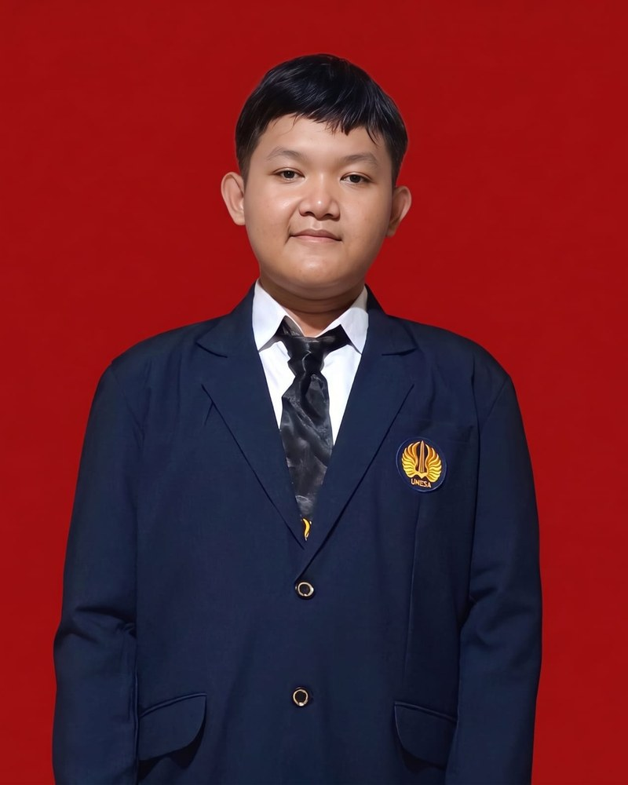

Pengembangan Web
Membuat halaman web yang rapi dan nyaman dibuka di laptop maupun HP.
Halo·· WIB
Mahasiswa Informatika yang suka mengubah ide menjadi aplikasi yang berfungsi.

Halo, saya mahasiswa baru Informatika. Saya sedang belajar membangun website dan program, dan ingin terus berkembang lewat proyek nyata.
Di portofolio ini saya mengumpulkan kemampuan, pencapaian, dan karya yang saya buat selama kuliah.
Kemampuan yang sedang saya pelajari dan tools yang saya pakai.
Membuat halaman web yang rapi dan nyaman dibuka di laptop maupun HP.
Menulis program untuk mengolah data dan menyelesaikan soal praktikum.
Menyusun materi visual untuk tugas dan presentasi kelompok.
Penyelenggara / Lembaga
Deskripsi singkat: Saya Mendapatkan Sertifikat Tersebut Setelah Menjalani Uji Kompetensi Di Tingkat SMK.
Lihat buktiPenyelenggara / Lembaga
Deskripsi singkat : Saya Mendapatkan Sertifikat Ini Setelah Melakukan PKL Di CV SEKAWAN TEHNIK.
Terbuka untuk proyek, magang, dan diskusi seputar pengembangan web dan Informatika.
Unduh CV / Resume